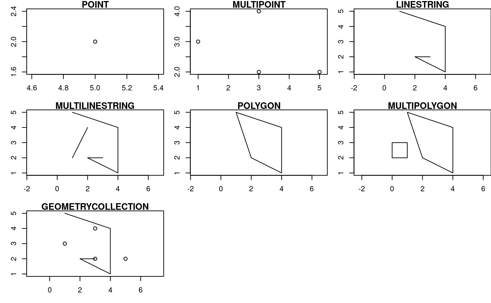

vignettes/cast.Rmd
cast.Rmdst_type = function(x){
if (all(is.na(x))){
return(NA)
}
x_class = class(x)
if ("sfg" %in% x_class){
return("sfg")
} else if ("sfc" %in% x_class){
return("sfc")
} else if ("sf" %in% x_class){
return("sf")
}
}
st_geometry_type_s = function(x){
if (is.null(x)){
return(NULL)
} else {
return(as.character(st_geometry_type(x)))
}
}
st_cast_s = possibly(st_cast, NULL)
unique_s = function(x) ifelse(is.null(x), "NA", unique(x))
st_caster = function(x){
geometries_df = data_frame(to = c("POINT", "MULTIPOINT",
"LINESTRING", "MULTILINESTRING",
"POLYGON", "MULTIPOLYGON",
"GEOMETRYCOLLECTION"))
geo_df = geometries_df %>%
mutate(result = map(to, st_cast_s, x = x)) %>%
mutate(result_geom = map(result, st_geometry_type_s)) %>%
mutate(result_geom_length = map_int(result_geom, length)) %>%
mutate(result_geom = map_chr(result_geom, unique_s)) %>%
mutate(result_type = map_chr(result, st_type)) %>%
mutate(input = list(x)) %>%
mutate(input_geom = st_geometry_type_s(x)) %>%
mutate(input_geom_length = map_int(input_geom, length)) %>%
mutate(input_geom = map_chr(input_geom, unique_s)) %>%
mutate(input_type = st_type(x)) %>%
mutate(input_geom = paste0(input_geom, "(", input_geom_length, ")"),
result_geom = paste0(result_geom, "(", result_geom_length, ")")) %>%
select(input_geom, to, result_geom_length) %>%
mutate(result_geom_length = if_else(result_geom_length == 0, NA_integer_, result_geom_length)) %>%
spread(to, result_geom_length)
geo_df
}pts_sfg = st_point(c(5, 2))
multipoint_matrix = rbind(c(5, 2), c(1, 3), c(3, 4), c(3, 2))
mpts_sfg = st_multipoint(multipoint_matrix)
linestring_matrix = rbind(c(1, 5), c(4, 4), c(4, 1), c(2, 2), c(3, 2))
line_sfg = st_linestring(linestring_matrix)
multilinestring_list = list(rbind(c(1, 5), c(4, 4), c(4, 1), c(2, 2), c(3, 2)),
rbind(c(1, 2), c(2, 4)))
mline_sfg = st_multilinestring((multilinestring_list))
polygon_list = list(rbind(c(1, 5), c(2, 2), c(4, 1), c(4, 4), c(1, 5)))
poly_sfg = st_polygon(polygon_list)
multipolygon_list = list(list(rbind(c(1, 5), c(2, 2), c(4, 1), c(4, 4), c(1, 5))),
list(rbind(c(0, 2), c(1, 2), c(1, 3), c(0, 3), c(0, 2))))
mpoly_sfg = st_multipolygon(multipolygon_list)
gemetrycollection_list = list(st_multipoint(multipoint_matrix),
st_linestring(linestring_matrix))
geoc_sfg = st_geometrycollection(gemetrycollection_list)
sfgs = list(pts_sfg = pts_sfg, mpts_sfg = mpts_sfg,
line_sfg = line_sfg, mline_sfg = mline_sfg,
poly_sfg = poly_sfg, mpoly_sfg = mpoly_sfg,
geoc_sfg = geoc_sfg)pts_sfc = st_sfc(pts_sfg)
mpts_sfc = st_sfc(mpts_sfg)
line_sfc = st_sfc(line_sfg)
mline_sfc = st_sfc((mline_sfg))
poly_sfc = st_sfc(poly_sfg)
mpoly_sfc = st_sfc(mpoly_sfg)
geoc_sfc = st_sfc(geoc_sfg)
sfcs = list(pts_sfc = pts_sfc, mpts_sfc = mpts_sfc,
line_sfc = line_sfc, mline_sfc = mline_sfc,
poly_sfc = poly_sfc, mpoly_sfc = mpoly_sfc,
geoc_sfc = geoc_sfc)my_df = data.frame(col = "a")
pts_sf = st_sf(my_df, pts_sfc)
mpts_sf = st_sf(my_df, mpts_sfc)
line_sf = st_sf(my_df, geom = line_sfc)
mline_sf = st_sf(my_df, geom = mline_sfc)
poly_sf = st_sf(my_df, geom = poly_sfc)
mpoly_sf = st_sf(my_df, geom = mpoly_sfc)
geoc_sf = st_sf(my_df, geom = geoc_sfc)
sfs = list(pts_sf = pts_sf, mpts_sf = mpts_sf,
line_sf = line_sf, mline_sf = mline_sf,
poly_sf = poly_sf, mpoly_sf = mpoly_sf,
geoc_sf = geoc_sf)par(mfrow = c(3, 3))
par(mar = c(3, 3, 1, 0))
plot(pts_sfc, axes = TRUE, main = "POINT")
plot(mpts_sfc, axes = TRUE, main = "MULTIPOINT")
plot(line_sfc, axes = TRUE, main = "LINESTRING")
plot(mline_sfc, axes = TRUE, main = "MULTILINESTRING")
plot(poly_sfc, axes = TRUE, main = "POLYGON")
plot(mpoly_sfc, axes = TRUE, main = "MULTIPOLYGON")
plot(geoc_sfc, axes = TRUE, main = "GEOMETRYCOLLECTION")
| input_geom | GEOMETRYCOLLECTION | LINESTRING | MULTILINESTRING | MULTIPOINT | MULTIPOLYGON | POINT | POLYGON |
|---|---|---|---|---|---|---|---|
| POINT(1) | 1 | NA | NA | 1 | NA | 1 | NA |
| MULTIPOINT(1) | 1 | 1 | 1 | 1 | 1 | 1 | 1 |
| LINESTRING(1) | 1 | 1 | 1 | 1 | 1 | 1 | 1 |
| MULTILINESTRING(1) | 1 | 1 | 1 | 1 | NA | 1 | NA |
| POLYGON(1) | 1 | 1 | 1 | 1 | 1 | 1 | 1 |
| MULTIPOLYGON(1) | 1 | 1 | 1 | 1 | 1 | 1 | 1 |
| GEOMETRYCOLLECTION(1) | 1 | 1 | 1 | 1 | 1 | 1 | 1 |
| input_geom | GEOMETRYCOLLECTION | LINESTRING | MULTILINESTRING | MULTIPOINT | MULTIPOLYGON | POINT | POLYGON |
|---|---|---|---|---|---|---|---|
| POINT(1) | NA | 1 | NA | 1 | NA | 1 | NA |
| MULTIPOINT(1) | NA | 1 | 1 | 1 | NA | 4 | 1 |
| LINESTRING(1) | NA | 1 | 1 | 1 | NA | 5 | 1 |
| MULTILINESTRING(1) | NA | 2 | 1 | 2 | NA | 7 | NA |
| POLYGON(1) | NA | 1 | 1 | 1 | 1 | 5 | 1 |
| MULTIPOLYGON(1) | 1 | NA | 1 | 1 | 1 | 10 | 2 |
| GEOMETRYCOLLECTION(1) | 1 | NA | NA | 1 | NA | 9 | NA |
| input_geom | GEOMETRYCOLLECTION | LINESTRING | MULTILINESTRING | MULTIPOINT | MULTIPOLYGON | POINT | POLYGON |
|---|---|---|---|---|---|---|---|
| POINT(1) | NA | 1 | NA | 1 | NA | 1 | NA |
| MULTIPOINT(1) | NA | 1 | 1 | 1 | NA | 4 | 1 |
| LINESTRING(1) | NA | 1 | 1 | 1 | NA | 5 | 1 |
| MULTILINESTRING(1) | NA | 2 | 1 | 2 | NA | 7 | NA |
| POLYGON(1) | NA | 1 | 1 | 1 | 1 | 5 | 1 |
| MULTIPOLYGON(1) | 1 | NA | 1 | 1 | 1 | 10 | 2 |
| GEOMETRYCOLLECTION(1) | 1 | NA | NA | 1 | NA | 9 | NA |